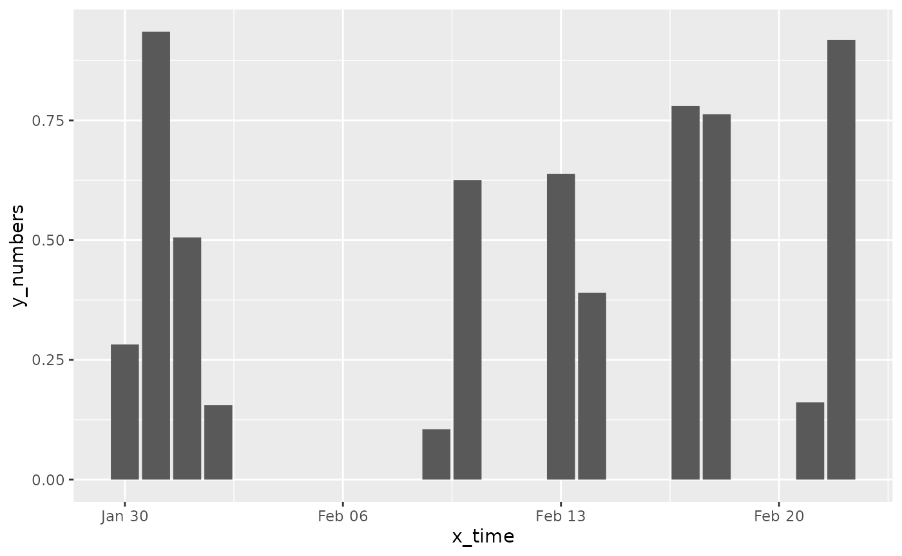
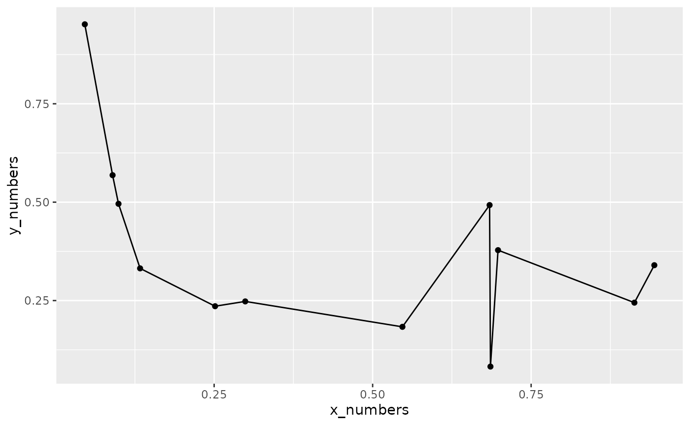

chart-examples.Rmd
# example data shipped with the package
cjs_example_data('bar')
#> letters numbers group
#> 1 A 5 g1
#> 2 B 3 g1
#> 3 C 4 g1
#> 4 D 3 g1
#> 5 E 3 g1A simple call. We often need to build further from here.
cjs_example_data('bar') %>%
chartjs(type = 'bar', x = letters, y = numbers)
# Multiple groups in data
cjs_example_data('bar', grouped = TRUE) %>%
chartjs(type = 'bar', x = letters, y = numbers, group = group)Adding axis and themes.
cjs_example_data('bar') %>%
chartjs(type = 'bar', x = letters, y = numbers) %>%
cjs_scale_cartesian(id = 'y', title.text = 'count',
ticks = cjs_ticks(callback = ticks_integer_callback(step = 1))) %>%
cjs_scale_category(id = 'x', labels = month.name[1:5],
grid = cjs_grid(display = FALSE)) %>%
cjs_theme(title.text = 'A Chart.js plot', legend.position = 'none')Adding datasets.
cjs_example_data('bar') %>%
chartjs() %>%
cjs_add_bars(x = letters, y = numbers, label = 'from source data') %>%
cjs_add_bars(x = LETTERS[1:5], y = 5:1, label = 'from vectors') %>%
cjs_add_bars(x = x1, y = y1, label = 'from given data',
data = data.frame(x1 = LETTERS[1:5], y1 = rpois(5,5))) %>%
cjs_scale_color(backgroundColors = c('#181E20', '#045C94','#FFBB1C'))Stacking dataset sets - stacked bar plot
cjs_example_data('bar') %>%
chartjs() %>%
cjs_add_bars(x = letters, y = numbers, label = 'from source data') %>%
cjs_add_bars(x = LETTERS[1:5], y = 5:1, label = 'from vectors') %>%
cjs_add_bars(x = x1, y = y1, label = 'from given data',
data = data.frame(x1 = LETTERS[1:5], y1 = rpois(5,5))) %>%
cjs_scale_color(backgroundColors = c('#181E20', '#045C94','#FFBB1C')) %>%
cjs_stack_bars()Horizontal bar plot
cjs_example_data('bar') %>%
chartjs(type = 'bar') %>%
cjs_add_bars(x = letters, y = numbers, colors = palette()[1:5]) %>%
cjs_bar_orientation('horizontal')Date axis - note uses formatting of https://date-fns.org/ … https://date-fns.org/v2.29.3/docs/format
cjs_example_data('scatter') %>%
chartjs() %>%
cjs_add_bars(x = x_time, y = y_numbers) %>%
cjs_scale_time(id = 'x', time.unit = 'day')
cjs_example_data('scatter') %>%
chartjs() %>%
cjs_add_bars(x = x_time, y = y_numbers) %>%
cjs_scale_time(id = 'x', time.unit = 'day', time.displayFormats = 'dd/MM/yyyy')
# expands data
cjs_example_data('scatter') %>%
ggplot() +
geom_col(aes(x = x_time, y = y_numbers))
# example data shipped with the package
cjs_example_data('scatter')
#> x_numbers x_time y_numbers group
#> 1 0.7921958 2023-01-26 0.2521204 g1
#> 2 0.8137265 2023-01-30 0.4293805 g1
#> 3 0.4940112 2023-01-25 0.7893057 g1
#> 4 0.4313574 2023-02-08 0.2026629 g1
#> 5 0.5257515 2023-02-04 0.7165392 g1
#> 6 0.6721241 2023-01-29 0.8163982 g1
#> 7 0.6314516 2023-02-05 0.3105375 g1
#> 8 0.6057216 2023-02-06 0.8454043 g1
#> 9 0.4419524 2023-01-18 0.5078164 g1
#> 10 0.3869803 2023-01-28 0.4816856 g1
#> 11 0.3921374 2023-01-23 0.7987000 g1
#> 12 0.1174888 2023-02-01 0.2166386 g1Call with axes specs.
cjs_example_data('scatter') %>%
chartjs(type = 'scatter', x = x_numbers, y = y_numbers) %>%
# fix documentation of these
cjs_scale_cartesian(id = 'y', title.text = 'Numbers on Y',
min = -0.2, max = 1.2) %>%
cjs_scale_cartesian(id = 'x', title.text = 'Numbers on X',
min = -0.2, max = 1.2)Adding datasets and colouring
cjs_example_data('scatter') %>%
chartjs() %>%
cjs_add_points(x = x_numbers, y = y_numbers, label = 'from source data') %>%
cjs_add_points(x = runif(12), y = runif(12), label = 'from vectors') %>%
cjs_add_points(x = x1, y = y1, label = 'from given data',
data = data.frame(x1 = runif(12), y1 = runif(12))) %>%
cjs_scale_color(backgroundColors = palette()[1:3])Adding a line to the points
cjs_example_data('scatter') %>%
chartjs() %>%
cjs_add_points(x = x_numbers, y = y_numbers, label = 'a', show_line = TRUE)
# arranges data
cjs_example_data('scatter') %>%
ggplot(aes(x = x_numbers, y = y_numbers)) +
geom_point() +
geom_line()
Point shape and sizes
unlist(cjs_shapes)
#> circle cross crossRot dash line
#> "circle" "cross" "crossRot" "dash" "line"
#> rect rectRounded rectRot star triangle
#> "rect" "rectRounded" "rectRot" "star" "triangle"
#> false
#> "FALSE"
cjs_example_data('scatter') %>%
chartjs() %>%
cjs_add_points(x = x_numbers, y = y_numbers, label = 'a') %>%
cjs_add_points(x = runif(12), y = runif(12), label = 'b') %>%
cjs_add_points(x = x1, y = y1, label = 'c', data = data.frame(x1 = runif(12), y1 = runif(12))) %>%
cjs_scale_color(backgroundColors = c(a = '#181E20', b = '#045C94', c = '#FFBB1C'), match_background_and_border = T) %>%
cjs_scale_shape(pointStyles = c(cjs_shapes$circle, 'cross', cjs_shapes[['star']])) %>%
cjs_scale_size(pointRadii = c(5,10,2))Doughnut and pie fit in the same realm - doughnut_pie
with a type= parameter
cjs_example_data('doughnut_pie')
#> letters numbers group
#> 1 A 5 g1
#> 2 B 3 g1
#> 3 C 4 g1
#> 4 D 5 g1
#> 5 E 3 g1Doughnut
cjs_example_data('doughnut_pie') %>%
chartjs() %>%
cjs_add_doughnut_pie(type = 'doughnut', x = letters, y = numbers)Can stack .. needs work/QA
cjs_example_data('doughnut_pie') %>%
chartjs() %>%
cjs_add_doughnut_pie(type = 'doughnut', x = letters, y = numbers) %>%
cjs_add_doughnut_pie(type = 'doughnut', x = LETTERS[1:5], y = 1:5)Pie
cjs_example_data('doughnut_pie') %>%
chartjs() %>%
cjs_add_doughnut_pie(type = 'pie', x = letters, y = numbers, colors = palette()[1:5])Needs work
cjs_example_data('bar') %>%
chartjs(type = 'bar', x = letters, y = numbers) %>%
cjs_theme(chart.backgroundColor = 'pink',
title.text = 'A pink chart',
legend.position = 'right')